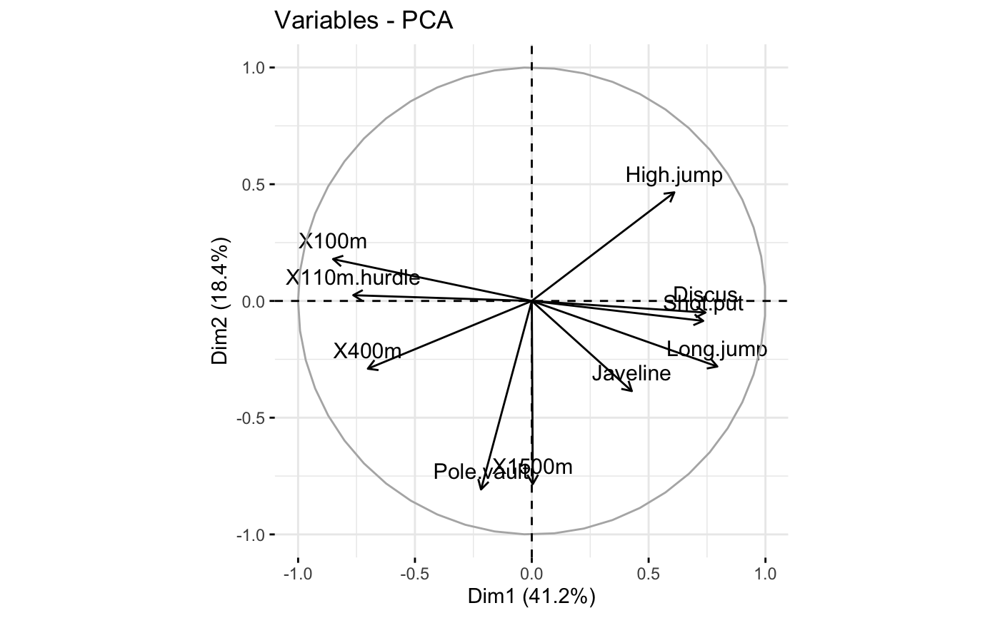
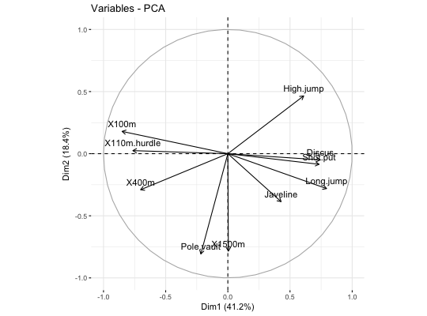

fviz_add.RdAdd supplementary data to a plot
fviz_add(ggp, df, axes = c(1, 2), geom = c("point", "arrow"), color = "blue", addlabel = TRUE, labelsize = 4, pointsize = 2, shape = 19, linetype = "dashed", repel = FALSE, font.family = "", ...)
| ggp | a ggplot2 plot. |
|---|---|
| df | a data frame containing the x and y coordinates |
| axes | a numeric vector of length 2 specifying the components to be plotted. |
| geom | a character specifying the geometry to be used for the graph Allowed values are "point" or "arrow" or "text" |
| color | the color to be used |
| addlabel | a logical value. If TRUE, labels are added |
| labelsize | the size of labels. Default value is 4 |
| pointsize | the size of points |
| shape | point shape when geom ="point" |
| linetype | the linetype to be used when geom ="arrow" |
| repel | a boolean, whether to use ggrepel to avoid overplotting text labels or not. |
| font.family | character vector specifying font family. |
| ... | Additional arguments, not used |
a ggplot2 plot
http://www.sthda.com
# \donttest{ # Principal component analysis data(decathlon2) decathlon2.active <- decathlon2[1:23, 1:10] res.pca <- prcomp(decathlon2.active, scale = TRUE) # Visualize variables p <- fviz_pca_var(res.pca) print(p)# Add supplementary variables coord <- data.frame(PC1 = c(-0.7, 0.9), PC2 = c(0.25, -0.07)) rownames(coord) <- c("Rank", "Points") print(coord)#> PC1 PC2 #> Rank -0.7 0.25 #> Points 0.9 -0.07fviz_add(p, coord, color ="blue", geom="arrow")# }